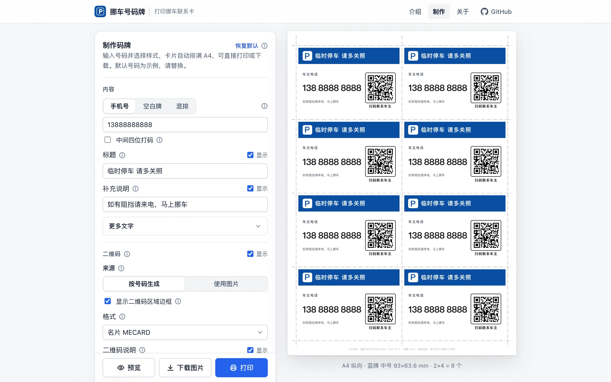
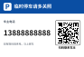
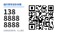
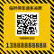
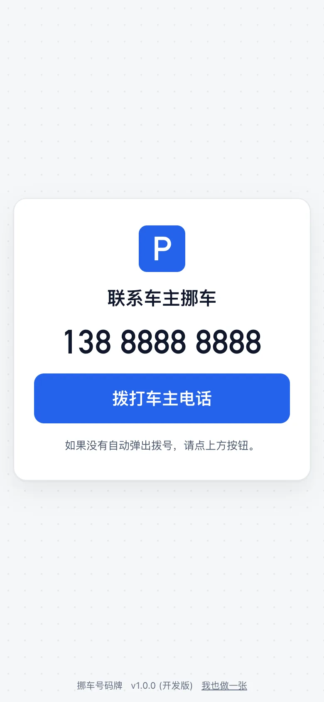

免费 · 无需注册 · 号码不上传
挪车联系卡，
在线做好直接打印
输入手机号，选一种样式，卡片自动排满 A4。带拨号二维码和裁切线，打印后沿线裁开，放在车内挡风玻璃下即可。
- 5种样式
- 3档尺寸
- 最多21张 / A4

五种样式
黑白、彩色两种配色；文字、标志、二维码都可调整或关闭。



为打印而设计
自动排满 A4
按所选尺寸计算每张纸最多能排几张，自动选择纸张方向；横纵都放不下时会提示。
裁切线不压卡片
共用裁切线一刀裁开一整排；角线模式支持出血。文字与二维码离裁切线不少于 2.5 mm，裁偏一点也不伤字。
扫码即可联系
二维码可选名片（弹出联系人）、直接拨号，或打开拨号页再拨号，适配不认 tel: 的扫码器。
可读性提示
按卡片尺寸估算数字的可视距离和二维码的扫描距离，低于建议值时提醒换大一档。
打印或下载
可直接打印，也可下载 JPG（150–600 dpi）或 SVG 矢量图交给打印店。
手机电脑都能用
界面适配手机与电脑；访问过一次后断网也能打开，可添加到主屏幕。
三步做好
- 填写号码输入手机号；不想印号码可选空白牌，打印后手写；也可以在同一张纸上混排号码牌和空白牌。
- 选择样式与尺寸右侧实时预览整张 A4，所见即所打。
- 打印并裁开打印设置选边距「无」、缩放 100%，沿裁切线裁开。
扫码之后
选择“网址 → 拨号”时，二维码打开一个只显示号码和拨号按钮的页面，打开即尝试拨号；在微信中扫码时需点按钮拨打。
拨号页可以托管在你自己的网站上，制作时填写它的网址即可。

隐私
号码不上传
号码与设置只保存在本设备的浏览器中，二维码在本机生成。
不收集数据
没有账号、统计脚本和广告。页面托管服务可能记录常规访问日志。
开源
全部代码公开，可自行审阅或部署到自己的网站。
常见问题
打印出来的尺寸不对？
打印窗口里缩放选「100% / 实际大小」，不要选「适合页面」；边距选「无」。建议先用普通纸试印，用尺子核对。
扫码后没有直接拨号？
部分扫码器不支持直接拨号。可在二维码格式里换成「名片」或「网址 → 拨号」，打印前请用常用的扫码方式实测。
“中间四位打码”能保护号码吗？
只遮挡卡片上肉眼可见的号码；二维码里仍是完整号码，扫码即可看到。
打印店需要什么文件？
下载 A4 整张的 JPG（300 dpi 以上）或 SVG。SVG 中的文字使用本机字体，换电脑打开可能略有差异，需要完全一致时用 JPG。
颜色印出来不对或没有底色？
在打印窗口勾选「背景图形」。只有黑白打印机时选黑白配色。
现在就做一张
不到一分钟，打印裁开即可使用。
开始制作